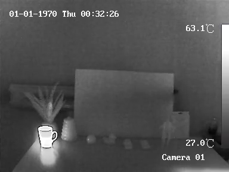

Thermal Cameras, also known as infrared (IR) cameras or thermal imagers, are sophisticated devices that detect
and visualize the infrared radiation emitted by objects. Unlike conventional cameras that capture images based
on visible light, thermal cameras operate in the infrared spectrum, which is beyond the range of human vision.
This capability allows them to create images based on temperature differences, making heat visible [14].
All objects above absolute zero temperature emit infrared energy, and the intensity of this emission is related
to the object's temperature. Thermal cameras are equipped with an infrared detector (Sensor array or detector
chip), an optical system, often including specialized lenses made of materials like germanium, which are
transparent to infrared radiation. Thermal imaging technology is independent of any external light source
because it relies solely on the detection of emitted infrared radiation. This makes thermal cameras highly
effective in low-light or even completely dark conditions.
Pipeline
The process to capture infrared energy and produce a digital image begins with infrared radiation emitted by
objects being captured. This radiation is then processed through the following stages to create a digital
thermal image:
Infrared optics: Unlike visible light cameras that typically use glass lenses, thermal cameras require
specialized optics made of materials that are transparent to infrared radiation, such as germanium. The
optical system of the thermal camera, including these specialized lenses, focuses the incoming infrared
energy onto the infrared sensor array [15].
Infrared Sensor Array: The focused radiation then strikes the infrared sensor array, also known as the
detector chip, which contains thousands of detector pixels arranged in a grid. These pixels are made of
materials that react to infrared energy to convert it into an electronic signal.
These sensors can be based on different technologies. Bolometer-based thermal detectors have high
thermal sensitivity, small size and high accuracy. A bolometer is a material whose electrical resistance
changes in response to incident infrared radiation. Common materials for bolometers include vanadium oxide
(VOx) and amorphous silicon (a-Si) [15].
Other types of thermal detectors include pyroelectrical and thermoelectrical sensors. Pyroelectric
sensors accumulate charge based on incident IR, while thermoelectric sensors generate voltage difference
based on temperature differences.
Signal processing unit: The electronic signal produced by each pixel in the sensor array is then processed
by the cameras built-in-software and a signal processing unit.
The processor takes the signal from each pixel and applies mathematical calculations to create a colour
map representing the apparent temperature of the object.
Each temperature value is assigned a different colour in a process facilitated by a colour palette.
Typically, warmer areas are represented in lighter colours, and cooler areas are shown in darker colours.
This visual representation, known as a thermal image or thermogram, provides a detailed temperature map
of the surveyed area, highlighting temperature variations and potential anomalies.

Figure 1. Thermal Image
Infrared vs Visible Light
Unlike visible light cameras, which detect reflected light from a scene, thermal cameras detect emitted
infrared radiation, making hem highly effective in complete darkness and through obscurants such as smoke or
fog.
Detection Mechanism [14]:
Visible light cameras operate by detecting visible light that is reflected off objects. They capture
different wavelengths within the visible spectrum (typically 400nm to 700nm) and convert them into an
image representing the colours and intensities of the reflected light. The operation of these cameras
relies on an external light source to illuminate the scene.
Thermal cameras, on the other hand, detect infrared radiation that is emitted by objects. All objects
above absolute zero emit this infrared energy as a function of their temperature. Thermal cameras measure
the intensity of this emitted IR radiation and convert it into a visual image, where different colours
represent different temperatures ranges.
Performance in darkness [16]:
Because visible light cameras rely on reflected light, the perform poorly or not at all in complete
darkness. Without a source of visible light, there is nothing to detect and create and image from.
Thermal cameras are highly effective in complete darkness. Since they detect head naturally emitted by
objects, the absence of visible light has no impact on their ability to generate an image based on
temperature differences.
Performance with obscurants:
Visible light cameras can be significantly hindered by obscurants such as smoke and fog. These particles
in the air can scatter and absorb visual light, reducing visibility and making it difficult for the camera
to capture a clear image.
Thermal cameras generally perform better through certain obscurant like smoke and fog compared to visible
light cameras. This is because infrared radiation has longer wavelengths than visible light and is
therefore less susceptible to scattering by small particles. However, it is important to note that dense
fog or heavy rain can still impact the performance of thermal cameras to some extent due to absorption by
water particles.
Colour Palettes
Since infrared radiation is invisible to the human eye, thermal images are often displayed using false-colour
palettes. These colour palettes are essential for translating the detected infrared energy into a visual
representation. Different colours are assigned to different temperature ranges, creating a temperature map of
the scene. Some commonly used colour schemes are:
White hot: In this palette, hotter temperatures are represented by lighter colours,
progressing from black (cooler) to white(hottest). This palette is often intuitive as it aligns with
everyday association of white or bright colours with head, it can be useful for identifying sublet
temperature difference in hotter areas.
Black hot: this is the inverse of the white hot palette. Hotter temperatures are
represented by darker colours, ranging from white (cooler_ to black (hottest). This palette can be
beneficial for detecting minute temperature variations in cooler environments or when observing objects
that are generally hot against a cooler background.
Rainbow: The rainbow palette uses a spectrum of colours to represent different temperatures,
often starting with blue or violet for cooler temperatures and progressing through green, yellow, orange and
finally red for hotter temperatures. This palette can provide a more distinct visual separation between
different temperature ranges, making it easier to identify multiple temperature gradients within a scene.
The choice of colour palette often depends on the specific application and the user's preference. Different
palettes can highlight different aspects of the thermal image, making certain temperature anomalies or patterns
more apparent [14].